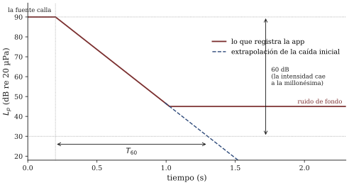
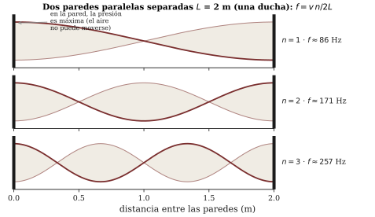

Lectura previa a la sesión 14. Objetivos: OA1.4, OA4.3, OA3.2. Aviso práctico: la segunda mitad de la sesión es una salida de medición por espacios de la universidad — venga con el celular CARGADO y las apps del curso instaladas.
Haga memoria de la última vez que cantó en la ducha. Sonaba bien, ¿verdad? Mejor que en la pieza, bastante mejor que en un estacionamiento. Y usted era el mismo, con la misma voz, los mismos pliegues vocales del capítulo 13, el mismo tracto. Lo que cambió no viaja con usted: estaba puesto en el edificio.
Todo sonido musical que usted ha escuchado en su vida llegó a través de un espacio, y el espacio nunca es neutro. Refleja unas cosas, absorbe otras, estira las notas después de que el instrumento calló, engorda ciertas frecuencias como si tuviera favoritas. Los músicos lo saben desde siempre y lo dicen a su manera: “esta sala ayuda”, “esta sala se come todo”, “aquí no puedo tocar rápido”. Arthur Benade, cuyo libro venimos siguiendo todo el semestre, lo dice de la manera más radical y más útil (BEN cap. 11): la sala es un sistema vibrante más — tiene modos como la cuerda de s03, resuena y decae como el resonador de s10 — y por lo tanto es, en toda regla, un instrumento: uno que suena siempre, junto con el que usted toca, y que usted no eligió.
Este capítulo desarma ese instrumento en sus tres piezas: qué hace cada superficie con el sonido, qué es esa “cola” que queda sonando, y por qué las salas chicas tienen notas favoritas. Al final, le adelanta el oficio: cómo se le pone número a una sala con un globo y un celular, que es exactamente lo que haremos — fuera del aula — en el segundo módulo.
Cuando el frente de presión de s02 llega a una superficie, la energía se reparte en dos destinos: una parte rebota hacia la sala y otra se absorbe — se disipa dentro del material o lo atraviesa y no vuelve. La proporción es una propiedad del material. El hormigón, el vidrio, la cerámica devuelven casi todo lo que reciben. Una cortina gruesa, una alfombra, veinte chaquetas con sus dueños adentro se quedan con una fracción grande. El patrón de referencia es elegante: una ventana abierta absorbe todo — lo que sale por ahí jamás regresa — y contra ese “absorbedor perfecto” se mide a todos los demás materiales (C&G cap. 14).
De aquí sale el primer vocabulario de diagnóstico, que usted ya usa sin saberlo: una sala de superficies duras y desnudas es una sala viva; una sala tapizada de materiales blandos es una sala seca. Su pieza es seca. La caja de escala del edificio es viva. La ducha — cerámica por todos lados, nada blando salvo usted — es vivísima, y ése es el primer tercio de la respuesta al ticket.
En un espacio cerrado el sonido no muere cuando la fuente calla: la energía atrapada sigue rebotando, y en cada rebote las superficies le cobran peaje. El resultado audible es la reverberación — esa cola que en una catedral gótica se queda sonando varios segundos, fundiendo cada acorde con el siguiente, y que en su pieza dura menos que un parpadeo.
Para comparar salas hace falta convertir la cola en número, y el número estándar tiene más de un siglo: el tiempo de reverberación, que anotamos , es el tiempo que tarda el nivel en caer 60 decibeles una vez detenida la fuente. Los 60 dB no son capricho: con la regla de s06 (cada 10 dB es un factor 10 de intensidad) son seis pisos de ×10 — la energía cayó a la millonésima parte, más o menos el viaje de un fortissimo hasta perderse en el ruido de fondo. La figura 1 lo dibuja.

Wallace Sabine, el fundador de este oficio, midió hacia 1900 decenas de salas de Harvard con un tubo de órgano, un cronómetro y paciencia de monje, y encontró una regularidad que sigue siendo la primera fórmula de todo acústico de salas (ROS cap. 23): el tiempo de reverberación crece con el volumen de la sala y decrece con su absorción total:
En proporciones — nuestro idioma: duplicar el volumen duplica la cola; duplicar la absorción la corta a la mitad. La catedral tiene cola larga por partida doble: volumen enorme y piedra que no absorbe casi nada. Y la fórmula tiene una consecuencia que todo intérprete conoce en carne propia: el público es absorción. La sala del ensayo general, vacía, y la sala del concierto, llena, son dos salas distintas — la segunda tiene la cola más corta. (El valor de la constante y un ejemplo calculado quedan para el recuadro del apunte; para este capítulo basta la proporción.)
¿Cuánta cola es buena? Depende del repertorio, y ése es uno de los conflictos más entretenidos de la disciplina: el canto gregoriano nació para catedrales de cola larguísima y suena desnudo en una sala seca; un cuarteto rápido se vuelve papilla en la catedral. Las salas de concierto célebres viven en un compromiso del orden de los 2 segundos (C&G cap. 14; ROS cap. 23) — suficiente cola para fundir y envolver, no tanta como para emborronar.
Falta el fenómeno más curioso del ticket: la ducha no solo alarga su voz — hay ciertas notas que salen solas, gordas, afinadas casi sin esfuerzo. Eso no es reverberación. Eso es un viejo conocido de este curso con un disfraz nuevo.
El aire encerrado entre dos paredes paralelas es una columna vibrante, igual que las de los tubos de s12, y tiene sus ondas estacionarias: frecuencias donde entre las dos paredes cabe un número exacto de medias longitudes de onda,
para paredes separadas una distancia . Cada par de superficies enfrentadas (largo, ancho, alto) aporta su propia serie: son los modos de la sala (ROS cap. 25; BEN 11.1–11.3). Cuando usted canta una nota que cae cerca de un modo, la sala entera entra en resonancia con usted — es la curva de respuesta de s10, con la sala de resonador — y la nota se refuerza sola. Entre modo y modo, la sala lo deja trabajar sin ayuda.
Haga la cuenta para una ducha de unos 2 metros entre paredes: Hz el primer modo, y la serie sigue por ~171 y ~257 Hz — plena zona grave de la voz. Pocos modos, bien separados, justo donde usted canta: la ducha es una máquina de favoritismo frecuencial. ¿Y la catedral? También tiene modos — todos los espacios cerrados los tienen — pero con de decenas de metros empiezan bajísimo y se apilan tan densos que en la zona musical hay multitudes de ellos por semitono: ninguno destaca, la respuesta se empareja, y lo que queda como firma de la sala es la cola. Regla general para llevarse: sala chica = modos ralos y audibles; sala grande = modos densos y reverberación al mando.

El método profesional para medir es conceptualmente idéntico al de Sabine: llenar la sala de energía, callar, cronometrar la caída. Nuestra versión usa lo que cabe en una mochila: un globo reventado (o una palmada fuerte) como impulso y una app que registra cómo cae el nivel. Hay un experimento fundacional que le puede servir de imagen: Joseph Henry evaluaba salas dando una palmada y atendiendo a cómo — y cuánto — respondía el eco (ROS cap. 23). Nosotros haremos lo mismo con instrumentación del siglo XXI y las mañas del oficio: repetir la medición, desconfiar del ruido de fondo, y anotar con qué se midió.
No le contamos aquí qué espacios visitará cada grupo ni qué valores esperan — eso arruinaría la mejor parte, porque la salida empieza, como todo en este curso, con una predicción escrita: ordenar los espacios de la ruta por cola esperada antes de reventar el primer globo. Lo que sí puede ir haciendo desde ya es entrenar el instrumento de calibración que lleva puesto: dé una palmada en cada espacio por el que pase esta semana — su pieza, un pasillo, una escalera, un baño embaldosado — y escuche la respuesta. Va a descubrir que ya sabe distinguir salas; lo que le falta, y es el oficio de esta sesión, es conectar lo que oye con el mecanismo y con el número.